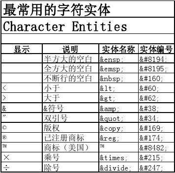

HTML：页面结构与常用标签
- 前端：我们网站的页面，包括网站的样式、图片、视频等一切用户可见的内容都是前端的内容。
- 后端：处理网站的所有数据来源，比如我们之前从数据库中查询数据，而我们查询的数据经过处理最终会被展示到前端，而用于处理前端数据的工作就是由后端来完成的。
相当于，前端仅仅是一层皮，它直接决定了整个网站的美观程度，我们可以自由地编排页面的布局，甚至可以编写好看的特效；而灵魂则是后端，如何处理用户的交互、如何处理数据查询是后端的职责所在，我们前面学习的都是后端内容，而Java也是一门专注于后端开发的语言。
对于前端开发我们需要学习一些新的内容，只有了解了它们，我们才能编写出美观的页面。
本教程并不会过多地去讲解前端知识，我们只会提及一些必要的内容，我们主要学习的是JavaWeb，更倾向于后端开发，学习前端的目的只是为了让同学们了解前后端的交互方式，在进行后端开发时思路能够更加清晰，有关前端的完整内容学习，可以浏览其他前端知识教程。
我们在最开始讲解网络编程时，提到了浏览器访问服务器，实际上浏览器访问服务器就是一种B/S结构，而我们使用Java代码编写的客户端连接服务器就是一种C/S结构。
我们前面学习了XML语言，它是一种标记语言，我们需要以成对标签的格式进行填写，但是它是专用于保存数据，而不是展示数据，而HTML恰恰相反，它专用于展示数据，由于我们前面已经学习过XML语言了，HTML语言和XML很相似，所以我们学习起来会很快。
第一个HTML页面
我们前面知道，通过浏览器可以直接浏览XML文件 ;
而浏览器一般是用于浏览HTML文件的，
以HTML语言编写的内容，会被浏览器识别为一个页面，并根据我们编写的内容，将对应的组件添加到浏览器窗口中。
我们一般使用Chrome、Safari、Microsoft Edge等浏览器进行测试，IE浏览器已经彻底淘汰了！
比如我们可以创建一个Html文件来看看浏览器会如何识别，使用IDEA也能编写HTML页面，我们在IDEA中新建一个Web模块，进入之后我们发现，项目中没有任何内容，我们右键新建一个HTML文件，选择HTML5文件，并命名为index，创建后出现：
html****复制代码
<!DOCTYPE html>
<html lang="en">
<head>
<meta charset="UTF-8">
<title>Title</title>
</head>
<body>
</body>
</html>
我们发现，它和XML基本长得一样，并且还自带了一些标签，那么现在我们通过浏览器来浏览这个HTML文件（这里推荐使用内置预览，不然还得来回切换窗口）
我们发现现在什么东西都没有，但是在浏览器的标签位置显示了网页的名称为Title，并且显示了一个IDEA的图标作为网页图标。
现在我们稍微进行一些修改：
html****复制代码
<!DOCTYPE html>
<html lang="en">
<head>
<meta charset="UTF-8">
<title>lbw的直播间</title>
</head>
<body>
现在全体起立
</body>
</html>
再次打开浏览器，我们发现页面中出现了我们输入的文本内容，并且标题也改为了我们自定义的标题。
我们可以在设置->工具->Web浏览器和预览中将重新加载页面规则改为变更时，这样我们使用内置浏览器或是外部浏览器，可以自动更新我们编写的内容。
我们还可以在页面中添加一个图片，随便将一张图片放到html文件的同级目录下，命名为image.xxx，其中xxx是后缀名称，不要修改，我们在body节点中添加以下内容： 创建img标签时候, 只可以使用图片的相对路径 ;
html****复制代码
<img width="300" src="image.xxx" alt="剑光如我，斩尽牛杂">
<!-- 注意xxx替换成对应的后缀名称 -->
我们发现，我们的页面中居然能够显示我们添加的图片内容。因此，我们只需要编写对应的标签，浏览器就能够自动识别为对应的组件，并将其展示到我们的浏览器窗口中。
我们再来看看插入一个B站的视频，很简单，只需要到对应的视频下方，找到分享，我们看到有一个嵌入代码：
html****复制代码
<iframe src="//player.bilibili.com/player.html?aid=333231998&bvid=BV1rA411g7q8&cid=346917516&page=1" scrolling="no" border="0" frameborder="no" framespacing="0" allowfullscreen="true" width="800" height="500"> </iframe>
每一个页面都是通过这些标签来编写的，几乎所有的网站都是使用HTML编写页面。
HTML语法规范
一个HTML文件中一般分为两个部分：
- 头部：一般包含页面的标题、页面的图标、还有页面的一些设置，也可以在这里导入css、js等内容。
- 主体：整个页面所有需要显示的内容全部在主体编写。
我们首先来看头部，我们之前使用的HTML文件中头部包含了这些内容：
一般的html前置项
必须 写 :
<!DOCTYPE html> : 告诉浏览器用最新的标准模式来解析这个页面
<html lang="zh-CN"> : 声明页面的主要语言是中文（简体，中国大陆地区），帮助浏览器、搜索引擎、屏幕阅读器正确理解和处理页面内容。
<head>标签下
<meta charset="UTF-8"> : 告诉浏览器这个网页文件使用的是 UTF-8 字符编码。
<meta name="viewport" content="width=device-width, initial-scale=1.0"> : 实现移动端正常访问网页来实现 , 控制移动端浏览器的视口（ viewport，即可见的页面区域 ）行为，让网页在手机、平板上按预期缩放和布局。
html****复制代码
<meta charset="UTF-8"> 告诉浏览器这个网页文件使用的是 UTF-8 字符编码。
<title>lbw的直播间</title>
首先meta标签用于定义页面的一些元信息，这里使用它来定义了一个字符集（编码格式），一般是UTF-8，下面的title标签就是页面的标题，会显示在浏览器的上方。我们现在来给页面设置一个图标，图标一般可以在字节跳动的IconPark网站找到：https://iconpark.oceanengine.com/home，选择一个自己喜欢的图标下载即可。
将图标放入到项目目录中，并命名为icon.png，在HTML头部添加以下内容：
配置页面图标 link rel = "icon"
html****复制代码
<link rel="icon" href="icon.png" type="image/x-icon" />
link标签用于关联当前HTML页面与其他资源的关系，关系通过rel属性指定，这里使用的是icon表示这个文件是当前页面图标。
现在访问此页面，我们发现页面的图标已经变成我们指定的图标样式了。
现在我们再来看主体，我们可以在主体内部编写该页面要展示的所有内容，比如我们之前就用到了img标签来展示一个图片，其中每一个标签都称为一个元素：
图片标签实现调用 img src = "相对地址" ;
html****复制代码
<img width="300" src="image.xxx" alt="当图片加载失败时，显示的文本">
我们发现，这个标签只存在一个，并没有成对出现，HTML中有些标签是单标签，也就是说只有这一个，还有一些标签是双标签，必须成对出现，HTML中，也不允许交叉嵌套，但是出现交叉嵌套时，浏览器并不会提示错误，而是仍旧尝试去解析这些内容，甚至会帮助我们进行一定程度的修复，想写错html很难 比如：
html****复制代码
<body>
<iframe src="//player.bilibili.com/player.html?aid=333231998&bvid=BV1rA411g7q8&cid=346917516&page=1" width="800" height="500"
scrolling="no" border="0" frameborder="no" framespacing="0" allowfullscreen="true">
</body>
</iframe>
很明显上面的代码已经出现交叉嵌套的情况了，但是依然能够在浏览器中正确地显示。
在主体中，我们一般使用div标签 <> 来分割页面：
<div> 块级标签 , 独占一行 , 利于后面实现按块来修改样式
html****复制代码
<body>
<div>我是第一块</div>
<div>我是第二块</div>
</body>
通过使用div标签，我们将整个页面按行划分，而高度就是内部元素的高度，那么如果只希望按元素划分，也就是说元素占多大就划分多大的空间，那么我们就可以使用span标签来划分：
<span> 行级标签 , 在一行内排列，不换行，只占内容所需宽度( 其实超过也会自己实现换行的 ) ;
常见的使用场景, 提供一个钩子 , 提供特殊锚点来实现 对特定内容实现渲染 ;
html****复制代码
<body>
<div>
<span>我是第一块第一个部分</span>
<span>我是第一块第二个部分</span>
</div>
<div>我是第二块</div>
</body>
输出内容 :
第一块第一部分 第一块第二部分
我是第二块
<p> 段级标签 , 常使用于实现文本的编写
我们也可以使用p段落标签，它一般用于文章分段：
html****复制代码
<body>
<p>
你看这个彬彬啊，才喝几罐就醉了，真的太逊了。 这个彬彬就是逊呀！
听你这么说，你很勇哦？ 开玩笑，我超勇的，超会喝的啦。
超会喝，很勇嘛。身材不错哦，蛮结实的嘛。
</p>
<p>
哎，杰哥，你干嘛啊。都几岁了，还那么害羞！我看你，完全是不懂哦！
懂，懂什么啊？ 你想懂？我房里有一些好康的。
好康，是新游戏哦！ 什么新游戏，比游戏还刺激！
</p>
<p>
杰哥，这是什么啊？ 哎呦，你脸红啦！来，让我看看。
不要啦！！ 让我看看嘛。 不要啦，杰哥，你干嘛啊！
让我看看你法语正不正常啊！
</p>
</body>
那么如果遇到特殊字符该怎么办呢？和XML一样，我们可以使用转义字符：
转义字符表 : 用于在使用 html 页面编写时实现符号的输出 ;

注意：
多个连续的空格字符只能被识别为一个，如果需要连续多个必须使用转义字符，
同时也不会识别换行，换行只会变成一个空格，需要换行必须使用
br标签。
HTML常用标签
body中常用区分 :
标签 | 类型 | 默认行为 | 用途 |
| 块级元素 | 独占一行，上下有间距 | 页面布局、容器 |
| 行内元素 | 与其他内容同行 | 文本内局部样式 |
| 块级元素 | 独占一行，上下有较大间距 | 段落文本 |
前面我们已经了解了HTML的基本语法规范，那么现在我们就来看看，有哪些常用的标签吧，首先是
换行和分割线：<br> , <hr>
- br 换行
- hr 分割线
html****复制代码
<body>
<div>
我是一段文字<br>我是第二段文字
</div>
<hr>
<div>我是底部文字</div>
</body>
标题一般用h1到h6 , 级别高低只决定大小(都是内部定义的级别从高到低) 表示，我们来看看效果：
在浏览器编译中 , 如果出现标题标签嵌套, 容错机制会自动采用即使闭合的做法, 所以嵌套多层 , 只显示最内层的效果;
标题标签 : <h1> ~ <h6>
html****复制代码
<body>
<h1>一级标题</h1>
<h2>二级标题</h2>
<h3>三级标题</h3>
<h4>四级标题</h4>
<h5>五级标题</h5>
<h6>六级标题</h6>
<p>我是正文内容，真不错。</p>
</body>
现在我们来看看超链接，我们可以添加一个链接用于指向其他网站：
创建超链接 ; a href = 'url' target="用于指定url创建新页面的位置"
标签：<a href="....." target=".....">央视网</a>
属性：
href: 指定资源访问的url
target: 指定在何处打开资源链接
_self: 默认值，在当前页面打开
_blank: 在空白页面打开 <新窗口打开>
html****复制代码
<a href="https://www.bilibili.com">点击访问小破站</a>
我们也可以指定页面上的一个锚点进行滚动：
当href 指向的是位置id 时 实现页面的跳转 ;
实现超链接的时候文字有下划线 :
text-decoration : 控制超链接文本的格式 , 颜色 , 下划线类型(有无) ;
html****复制代码
<body>
<a href="#test">跳转锚点</a>
<img src="image.jpeg" width="500">
<img src="image.jpeg" width="500">
<img src="image.jpeg" width="500">
<img src="image.jpeg" width="500">
<div id="test">我是锚点</div>
<img src="image.jpeg" width="500">
<img src="image.jpeg" width="500">
<img src="image.jpeg" width="500">
</body>
每个元素都可以有一个id属性，我们只需要给元素添加一个id属性，就使用a标签可以跳转到一个指定锚点。
我们接着来看看列表元素，这是一个无需列表，其中每一个
li表示一个列表项：通过外部标签 实现对<li> 内元素前显示的符号类型 ;
ul 表示一个无序列表
html****复制代码
<ul>
<li>一号选项</li>
<li>二号选项</li>
<li>三号选项</li>
<li>四号选项</li>
<li>五号选项</li>
</ul>
使用ol来显示一个有序列表：
html****复制代码
<ol>
<li>一号选项</li>
<li>二号选项</li>
<li>三号选项</li>
<li>四号选项</li>
<li>五号选项</li>
</ol>
表格也是很重要的一种元素，但是它编写起来相对有一点麻烦：
创建表格 :
<table> :
<form> 创建搜索表单部分 : 可以实现 回车 自动 匹配 "submit" , 下面是便捷的使用方法;
1 . action : 提交的目标地址 ;
2 . method : 提交到目标地址的方式 , 常见的方式 : "post" , "get" ;
<table> 双标签 : 用于开始表格 ;
<thead> : 双标签 , 内部写表中的元素声明;
<tr> 声明表头元素
<tbody> : 双标签 , 内部写表格内数据填充
<th>单位行数据
<td> : 单位格
标签 | 全称 | 含义 | 用途 | 默认样式 |
| Table Header | 表头单元格 | 列标题/行标题 | 粗体 + 居中 |
| Table Data | 表格数据 | 普通数据单元格 | 普通字体 + 左对齐 |
html****复制代码
<table> //开始打表
<thead> //表头 ;
<tr> //一行; table-row ;
<th>学号</th>
<th>姓名</th>
<th>性别</th>
<th>年级</th> //每一列 ; <th>
</tr>
</thead>
<tbody>
<tr>
<td>0001</td>
<td>小明</td>
<td>男</td>
<td>2019</td>
</tr>
<tr>
<td>0002</td>
<td>小红</td>
<td>女</td>
<td>2020</td>
</tr>
</tbody>
</table>
虽然这样生成了一个表格，但是这个表格并没有分割线，并且格式也不符合我们想要的样式，那么如何才能修改这些基础属性的样式呢，我们就需要聊聊CSS了。
HTML表单
表单就像其名字一样，用户在页面中填写了对应的内容，点击按钮就可以提交到后台，比如登陆界面，就可以使用表单来实现：
一个网页中最重要的当属输入框和按钮了，那么我们来看看如何创建一个输入框和按钮：
<input> 输入框
html****复制代码
<label>
我是输入框
<input type="text">
</label>
对于一个输入框，我们一般会将其包括在一个lable标签中，它和span效果一样，但是我们点击前面文字也能快速获取输入框焦点。
html****复制代码
<body>
<div>登陆我们的网站</div>
<hr>
<div>
<label>
账号：
<input type="text">
</label>
</div>
<div>
<label>
密码：
<input type="password">
</label>
</div>
</body>
输入框可以有很多类型，我们来试试看password，现在输入内容就不会直接展示原文了。
创建一个按钮有以下几种方式，在学习JavaWeb时，我们更推荐第二种方式，我们后面进行登陆操作需要配合表单使用：
html****复制代码
<button>登陆</button>
<input type="submit" value="登陆">
<input type="button" value="登陆">
现在我们就可以写一个大致的登陆页面了：
html****复制代码
<body>
<h1>登陆我们的网站</h1>
<form>
<div>
<label>
账号：
<input type="text" placeholder="Username...">
</label>
</div>
<div>
<label>
密码：
<input type="password" placeholder="Password...">
</label>
</div>
<br>
<a href="https://www.baidu.com">忘记密码</a>
<br>
<br>
<div>
<input type="submit" value="登陆">
</div>
</form>
</body>
表单一般使用form标签将其囊括，但是现在我们还用不到表单提交，因此之后我们再来讲解表单的提交。
input只能实现单行文本，那么如何实现多行文本呢？
html****复制代码
<label>
这是我们的文本框<br>
<textarea placeholder="文本内容..." cols="10" rows="10"></textarea>
</label>
我们还可以指定默认的行数和列数，拖动左下角可以自定义文本框的大小。
我们还可以在页面中添加勾选框：
html****复制代码
<label>
<input type="checkbox">
我同意本网站的隐私政策
</label>
上面演示的是一个多选框，那么我们来看看单选框：
name -> 相当于创建一个接收值的键 name -> 键名
html****复制代码
<label>
<input type="radio" name="role">
学生
</label>
<label>
<input type="radio" name="role">
教师
</label>
这里需要使用name属性进行分组，同一个组内的选项只能选择一个。
以下标签如果不设置 name，它们的数据在提交时会被浏览器直接丢弃：
标签 说明
<input> (所有类型) 文本框、密码框、单选框、复选框、隐藏域等
<select> 下拉选择框
<textarea> 多行文本域
用于让用户输入多行数据 ;
textarea name="字段名" rows="行数" cols="列数">
默认文本内容（可选）
</textarea>
name属性的设置 : 相当于实现的是map 表中的 键 , 表内的下的全部元素独立同种属性都要打上同一个name 标签属性 , 后端才能接收这个字段;
我们也可以添加列表让用户进行选择，创建一个下拉列表：
select标签 设置多选项 , 内部设置 多个 <select> 标签 实现 下拉列表的作用 ; => 多选项 ;
html****复制代码
<label>
登陆身份：
<select>
<option>学生</option>
<option>教师</option>
</select>
</label>
默认选取的是第一个选项，我们可以通过selected属性来决定默认使用的是哪个选项。
当然，HTML的元素远不止我们所提到的这些，有关更多HTML元素的内容，可以自行了解。
多个checkbox创建复选框实现多选项的创建
<div>兴趣爱好：</div>
<input type="checkbox" name="hobby" value="read"> 阅读
<input type="checkbox" name="hobby" value="music"> 音乐
<input type="checkbox" name="hobby" value="sports"> 运动
<input type="checkbox" name="hobby" value="game"> 游戏
<button type="submit">提交</button>
一些有意思的文本基础格式的标签
直接在文本标签内部嵌套使用就行 :
相较于CSS 中设置文本的样式 :
使用 html 标签实现样式 : 可以实现强调的作用 ;
<strong> => font-weight: bold;
下面的使用时查询即可;
标签 | 语义 | 视觉效果 | 说明 |
| 无语义 | 粗体 | 仅用于吸引注意（如摘要、产品名），无重要性含义 |
| 无语义 | 斜体 | 用于技术术语、外来语、思想独白等 |
| 标记/高亮 | <mark>黄色高亮</mark> | 与用户当前搜索或引用相关的内容 |
| 小号注释 | 小字号 | 免责声明、版权信息、法律限制 |
| 不准确/过时 | ~~删除线~~ | 表示不再准确但未删除的内容（与 不同） |
| 无语义 | 下划线 | 避免使用（易与链接混淆），用 CSS 替代 |
HTML 文档结尾 <footer> , 块级标签元素
正常放入 文本标签元素就行 ;
内部常放入 多种 超链接 ;
使用<nav>(无实际功能 , 提供一个标记作用) ; 块级标签属性 ;
常见编写 :
<!-- 你的理解完全正确 -->
<nav>
<!-- 这里集中放一堆超链接 -->
<a href="/">首页</a>
<a href="/about">关于</a>
<a href="/service">服务</a>
<a href="/contact">联系</a>
</nav>